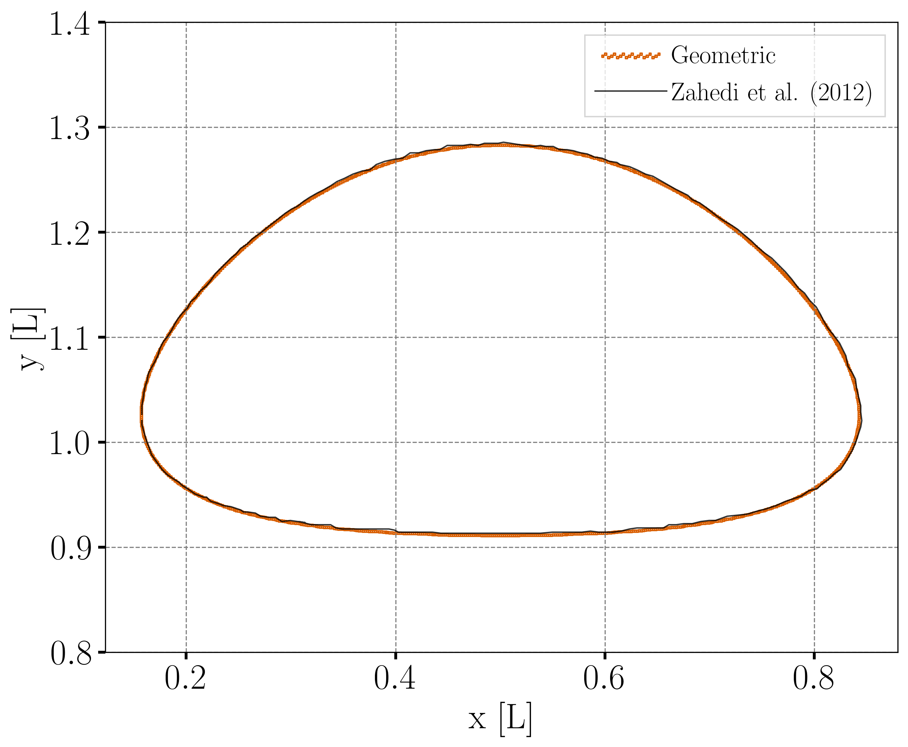
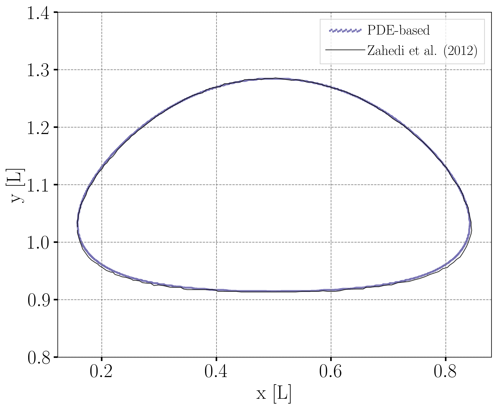
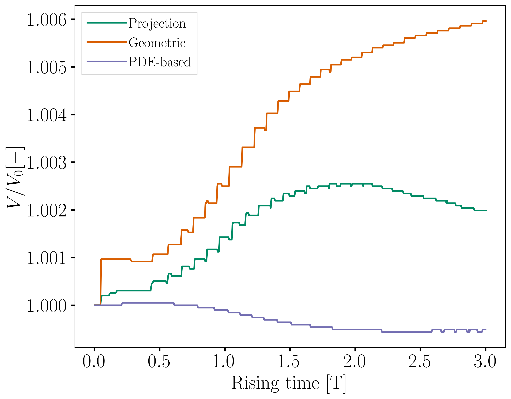
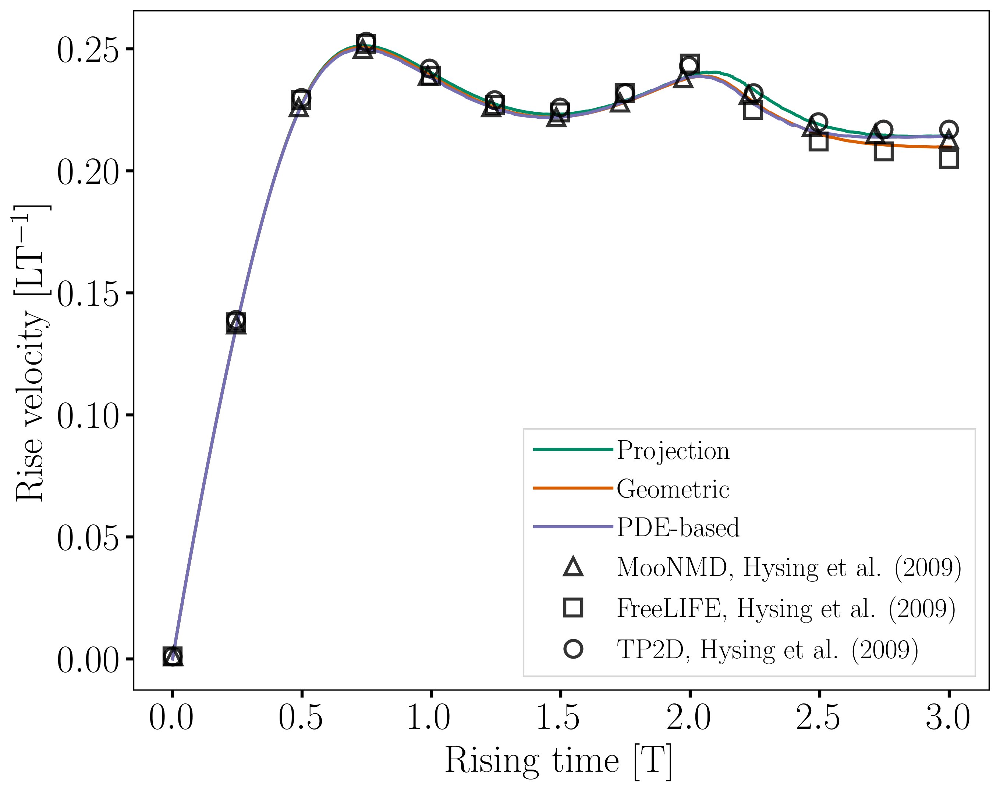
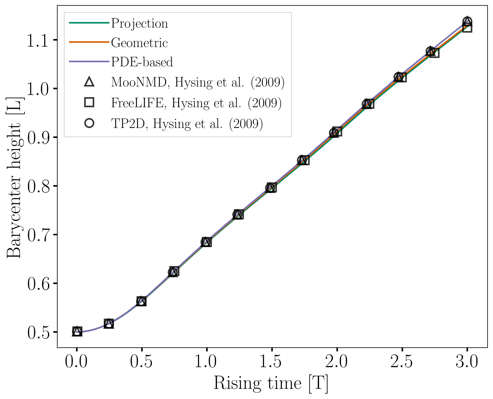

Rising Bubble#
This example simulates a two-dimensional rising bubble [1]. In the first part, we are interested in two different rising regimes: ellipsoidal and skirted. The second part, Interface Regularization Methods Comparison, focuses on the effects of the interface regularization methods on the results.
Features#
Solver:
lethe-fluidTwo phase flow handled by the Volume of fluids (VOF) approach with phase filtering, interface regularization, and surface tension force
Calculation of filtered phase fraction gradient and curvature fields
Unsteady problem handled by an adaptive BDF2 time-stepping scheme
Post-processing of a fluid barycentric coordinate and velocity
Comparison of interface regularization methods
Files Used in This Example#
All files mentioned below are located in the example’s folder (examples/multiphysics/rising-bubble).
Parameter files:
rising-bubble-proj.prm,rising-bubble-alge.prm,rising-bubble-geo.prmPostprocessing Python script:
rising-bubble.py
Description of the Case#
The two test cases simulated by Hysing et al. [1] are reproduced in this example. In the first test case, a circular bubble with a density of \(100\) and a kinematic viscosity of \(0.01\) is initialized with its centroid at \((0.5, 0.5)\) in a rectangular column filled with a denser fluid. The density of the latter is \(1000\) and its is kinematic viscosity is \(0.01\). The surface tension coefficient is taken as \(24.5\). The second test case corresponds to a bubble density of \(1\), a kinematic viscosity of \(0.1\), and a surface tension value of \(1.96\). The remaining properties are kept the same as in the first test case.
At \(t = 0\) the bubble is released and rises inside the denser fluid column.
The following schematic describes the geometry and dimensions of the simulation in the \((x,y)\) plane:

Note
On the upper and bottom walls slip boundary conditions are applied, and on side walls the boundary conditions are noslip.
An external gravity field of \(-0.98\) is applied in the \(y\) direction.
Parameter File#
Simulation Control#
Time integration is handled by a 2nd order backward differentiation scheme (bdf2), for a \(3~\text{s}\) simulation time with an initial time step of \(0.001~\text{s}\).
Note
This example uses an adaptive time-stepping method, where the
time-step is modified during the simulation to keep the maximum value of the CFL condition below a given threshold. Using output frequency = 20 ensures that the results are written every \(20\) iterations. Consequently, the time increment between each vtu file is not constant.
subsection simulation control
set method = bdf2
set time end = 3
set time step = 0.001
set adapt = true
set max cfl = 0.8
set output name = rising-bubble
set output frequency = 20
set output path = ./rising-bubble-proj/
end
Multiphysics#
The multiphysics subsection enables to turn on (true)
and off (false) the physics of interest. Here VOF is chosen.
subsection multiphysics
set VOF = true
end
Source Term#
The source term subsection defines the gravitational acceleration:
subsection source term
subsection fluid dynamics
set Function expression = 0; -0.98; 0
end
end
VOF#
In the VOF subsection, two features are enabled : the phase filtration and the surface tension force.
The phase filtration method filters the phase field used for the calculation of physical properties by stiffening the value of the phase fraction. The surface tension force computation is explained in the Static Bubble example.
Since a straightforward advection of the phase fraction typically leads to significant interface diffusion, an interface regularization method is required.
This is addressed in the interface regularization method subsection. Lethe provides three regularization techniques to maintain a sharp interface: the projection-based interface sharpening, the algebraic interface reinitialization, and the geometric interface reinitialization. The desired method can be selected using the type parameter.
We refer the reader to The Volume of Fluid (VOF) Method theory guide for more explanation on phase filtration and the interface regularization methods.
For the first part of this example, the projection-based interface sharpening method is selected and its parameters are defined in the subsection projection-based interface sharpening. The selection of the parameters for this method is explained in the Dam-Break example. The other regularization methods available are described in the second part of this example (Interface Regularization Methods Comparison).
subsection VOF
subsection interface regularization method
set type = projection-based interface sharpening
set frequency = 20
set verbosity = verbose
subsection projection-based interface sharpening
set threshold = 0.5
set interface sharpness = 1.5
end
end
subsection phase filtration
set type = tanh
set verbosity = quiet
set beta = 20
end
subsection surface tension force
set enable = true
set phase fraction gradient difusion factor = 4
set curvature diffusion factor = 1
set output auxiliary fields = true
end
end
Stabilization#
The vof dcdd stabilization is turned off as it had a negative impact on volume conservation.
subsection stabilization
set vof dcdd stabilization = false
end
Initial Conditions#
In the initial conditions subsection, the initial velocity and initial position of the liquid phase are defined. The light phase is initially defined as a circle with a radius \(r= 0.25\) and a center located at \((x,y)=(0.5, 0.5)\). We enable the use of a projection step to ensure that the initial phase distribution is sufficiently smooth, as explained in the Static Bubble example.
subsection initial conditions
set type = nodal
subsection uvwp
set Function expression = 0; 0; 0
end
subsection VOF
set Function expression = if ((x-0.5) * (x-0.5) + (y-0.5) * (y-0.5) < 0.25 * 0.25 , 1, 0)
subsection projection step
set enable = true
set diffusion factor = 1
end
end
end
Physical Properties#
We define two fluids simply by setting the number of fluids to be \(2\). In subsection fluid 0, we set the density and the kinematic viscosity for the phase associated with a VOF indicator of \(0\), depending on the test case. A similar procedure is done for the phase associated with a VOF indicator of \(1\) in subsection fluid 1.
Then a fluid-fluid type of material interaction is added to specify the surface tension model. In this example, it is set to constant with the surface tension coefficient depending on the test case [1].
The values in the provided parameter files correspond to case 1. When launching case 2, the density and the kinematic viscosity of fluid 1 and the surface tension coefficient for case 1 should be commented to use the ones for case 2 instead.
subsection physical properties
set number of fluids = 2
subsection fluid 0
set density = 1000
set kinematic viscosity = 0.01
end
subsection fluid 1
# case 1
set density = 100
set kinematic viscosity = 0.01
# case 2
# set density = 1
# set kinematic viscosity = 0.1
end
set number of material interactions = 1
subsection material interaction 0
set type = fluid-fluid
subsection fluid-fluid interaction
set first fluid id = 0
set second fluid id = 1
set surface tension model = constant
# case 1
set surface tension coefficient = 24.5
# case 2
# set surface tension coefficient = 1.96
end
end
end
Mesh#
We start off with a rectangular mesh that spans the domain defined by the corner points situated at the origin and at point
\((1,2)\). The first \(1,2\) couple defines that number of initial grid subdivisions along the length and height of the rectangle.
This makes our initial mesh composed of perfect squares. We proceed then to redefine the mesh globally six times by setting
set initial refinement = 6.
subsection mesh
set type = dealii
set grid type = subdivided_hyper_rectangle
set grid arguments = 1, 2 : 0, 0 : 1, 2 : true
set initial refinement = 6
end
Mesh Adaptation#
In the mesh adaptation subsection, adaptive mesh refinement is
defined for phase. min refinement level and max refinement level are \(6\) and \(9\), respectively. Since the bubble rises and changes its location, we choose a rather large fraction refinement (\(0.99\)) and moderate fraction coarsening (\(0.01\)).
To capture the bubble adequately, we set initial refinement steps = 5 so that the initial mesh is adapted to ensure that the initial condition is imposed for the VOF phase with maximal accuracy.
subsection mesh adaptation
set type = kelly
set variable = phase
set fraction type = fraction
set max refinement level = 9
set min refinement level = 6
set frequency = 1
set fraction refinement = 0.99
set fraction coarsening = 0.01
set initial refinement steps = 5
end
Post-processing: Fluid Barycenter Position and Velocity#
To compare our simulation results to the literature, we extract the position and the velocity of the barycenter of the bubble. This generates a vof_barycenter_information.dat file which contains the position and the velocity of the barycenter of the bubble.
subsection post-processing
set verbosity = quiet
set calculate barycenter = true
set barycenter name = vof_barycenter_information
end
Running the Simulation#
Call lethe-fluid by invoking:
to run the simulation using eight CPU cores. Feel free to use more.
Warning
Make sure to compile lethe in Release mode and run in parallel using mpirun. This simulation takes \(\sim \,7\) minutes on \(8\) processes.
Results and Discussion#
Case 1#
A python post-processing code (rising-bubble.py) is added to the example folder to post-process the data files generated by the barycenter post-processing and produce the bubble contour.
Run
to execute this post-processing code, where rising-bubble-proj is the directory that contains the simulation results and -c 1 is used for test case 1.
The following image shows the shape and dimensions of the bubble after \(3\) seconds of simulation, and compares them with results of Zahedi et al. [2]

The evolution of the position and velocity of the barycenter of the bubble is compared with the results of Zahedi et al. [2] and Hysing et al. [1] The following images show the results of these comparisons. The agreement between the simulations is remarkable considering the coarse mesh used within this example.
{kind=link}

Animation of the rising bubble example (test case 1):
Case 2#
The same python post-processing code (rising-bubble.py) is used for test case 2, with -c 2 instead.
The following image shows the shape of the bubble after \(3\) seconds of simulation, and compares it with results obtained by three different codes reported in the work of Hysing et al. [1]: TP2D, FreeLIFE and MooNMD.
{kind=link}
The evolution of the position and velocity of the barycenter of the bubble is also compared with the results from [1]. The following figures show good agreement with the reference.
{kind=link}

Interface Regularization Methods Comparison#
Parameter Files#
For the methods other than projection-based interface sharpening, the .prm file is modified as follows. In the VOF subsection, the interface regularization method is changed to geometric interface reinitialization or algebraic interface reinitialization. The associated parameter files, rising-bubble-geo.prm and rising-bubble-alge.prm respectively, are available in the example’s folder. The subsections are modified according to each regularization method:
With the geometric method, the phase fraction field is regularized using the signed distance from the interface, as described in The Volume of Fluid (VOF) Method theory guide. The
max reinitialization distanceparameter is set to \(0.032\) and we select thepiecewise polynomialfunction to transform the signed distance in a phase fraction field.
subsection interface regularization method
set type = geometric interface reinitialization
set frequency = 20
set verbosity = verbose
subsection geometric interface reinitialization
set max reinitialization distance = 0.032
set transformation type = piecewise polynomial
end
end
For the algebraic method, an intermidiary PDE is solved to compress the interface until reaching a pseudo-steady-state. This PDE is described in The Volume of Fluid (VOF) Method theory guide. Setting the
steady-state criterionto \(10^{-3}\) yields good results.
subsection interface regularization method
set type = algebraic interface reinitialization
set frequency = 20
set verbosity = verbose
subsection algebraic interface reinitialization
set steady-state criterion = 1e-3
end
end
Running the Simulations#
To run the simulations for the geometric and algebraic regularization methods:
We are interested in four metrics for this comparison: the barycenter position and velocity, the bubble shape, and the volume conservation. To compare these metrics between the three regularization methods, the python post-processing script rising-bubble-comparison.py is used:
where rising-bubble-proj, rising-bubble-geo, and rising-bubble-alge are the folders that contain the simulation results. Additionally, -c 1 is used for test case 1 and -c 2 for test case 2.
Case 1#
Barycenter Position and Velocity
The evolution of the height and velocity of the barycenter of the bubble when using either of the three regularization methods appears to be in great agreement with the results obtained by Zahedi et al. [2] and Hysing et al. [1].
Bubble Contour
For the final shape and dimensions of the bubble, the geometric and algebraic methods seem to reproduce the results from Zahedi et al. [2] more accurately than the projection-based method.


Volume Conservation
The following two definitions of the volume of the bubble are considered for this comparison:
\(V =\int_\Omega \phi \, d\Omega\), denoted the global volume
\(V =\int_{\Omega_\mathrm{1}} 1 \, d\Omega\), denoted the geometric volume where \(\Omega_1\) represents the domain occupied by fluid 1, corresponding to the bubble in this case.
The following images show the evolution of their ratio to the initial volume throughout the simulation, with the global volume shown on the left and the geometric volume, on the right. The PDE-based method has a smaller volume variation, while the projection-based method has a maximum volume variation of about \(0.25 %\) and the geometric method has a maximum volume loss of \(0.6%\) at the end of the simulation.

{kind=link}
{kind=link}
{kind=link}
{kind=link}
{kind=link}
{kind=link}
{kind=link}
Case 2#
Barycenter Position and Velocity
For this case also, the evolution of the height and velocity of the barycenter of the bubble when using either of the three regularization methods appears to be in agreement with the results obtained by the three solvers in the work of Hysing et al. [1].
 Bubble Contour
Regarding the final shape and dimensions of the bubble, the geometric and algebraic methods seem to reproduce the results from Hysing et al. [1] more accurately than the projection-based method. However, the three regularization methods capture the skirt of the bubble differently: the geometric and projection-based methods result, respectively, in a continuous and discontinuous skirt, while the PDE-based does not capture this feature.
Volume Conservation
The following images show the evolution of the ratio of the bubble volume over its initial counterpart throughout the simulation, with the global volume shown on the left and the geometric volume, on the right. Overall, the volume variation in this test case is higher than for case 1. For the projection-based and geometric methods, the likely cause of the increase of the volume, and particularly the global volume, is the presence of unresolved filaments that are thin enough to prevent the phase fraction from attaining a value of 1 within them.
{kind=link}
{kind=link}
{kind=link}
{kind=link}
{kind=link}
{kind=link}
{kind=link}